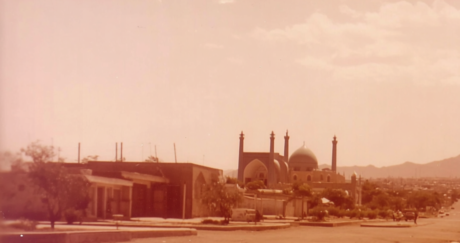
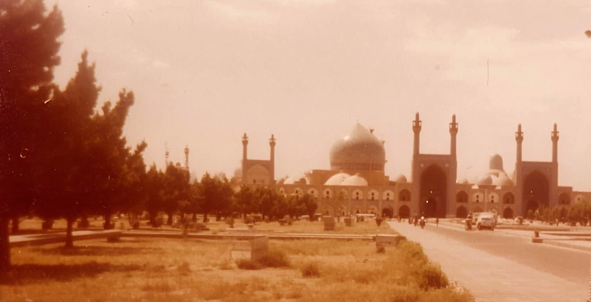
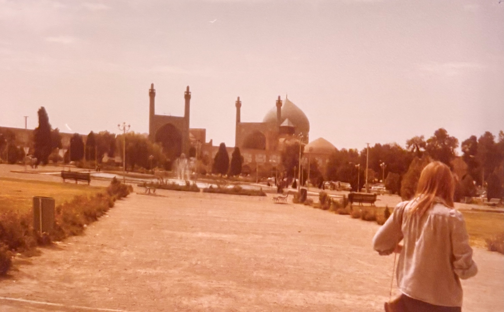
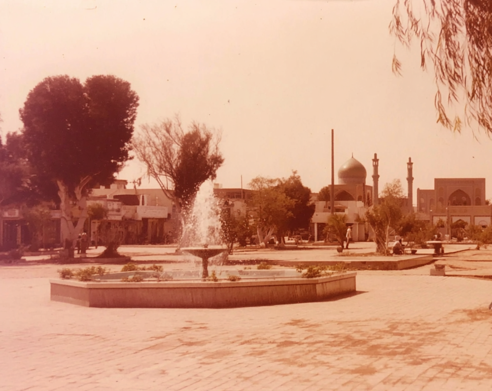
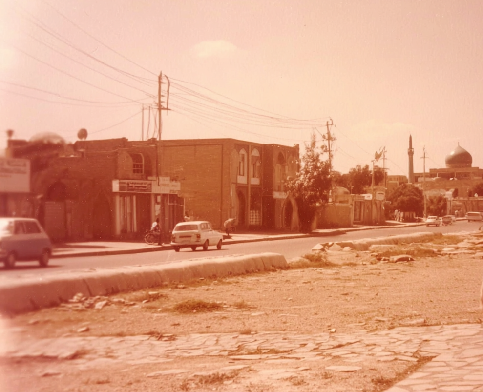

Low buildings and rooftops frame a distant domed mosque against a pale, dusty sky.
A central fountain sprays in an open square, with the mosque rising beyond trees and scattered pedestrians.
A roadside view of small shops and parked cars, with a mosque dome and minaret visible in the distance.
analog photograph in a town, soft desert haze in the air, warm sepia color cast from aged film, slight overexposure in the sky, subtle film grain and dust specks, candid composition with a figure walking away from camera at frame edge, natural light, high quality, and texture, cinematic style and quality, documentary travel photography, kodachrome film aesthetic, gentle lens softness, sun-faded print texture, nostalgic but realistic, 35mm photography
analog photograph, town square with fountain, soft desert haze in the air, warm sepia color cast from aged film, slight overexposure in the sky, subtle film grain and dust specks, candid composition with a figure walking away from camera at frame edge, natural light, high quality, and texture, cinematic style and quality, documentary travel photography, kodachrome film aesthetic, gentle lens softness, sun-faded print texture, nostalgic but realistic, 35mm photography
analog photograph, wide pedestrian path leading toward mosque with tall pillars and domes in the distance, soft desert haze in the air, warm sepia color cast from aged film, slight overexposure in the sky, subtle film grain and dust specks, candid composition with a figure walking away from camera at frame edge, natural light, documentary travel photography, kodachrome film aesthetic, gentle lens softness, sun-faded print texture, nostalgic but realistic, 35mm photography